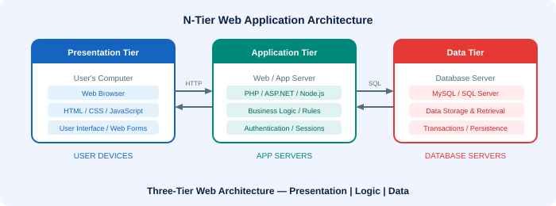

⚙️ Multitier Architecture
A layered design pattern separating an application into distinct physical and logical components

Layers vs Tiers
Layers (Logical)
A layer is a conceptual separation — it represents a role or responsibility in the software. Layers describe how the system is designed, not how it is deployed. The basic three layers are:
- Presentation Layer — deals with the user interface (what the user sees)
- Business Logic Layer — handles the business processes and application rules
- Data Management Layer — manages and persists the underlying data
Tiers (Physical)
A tier refers to physically separated devices (computers/nodes). A multi-tier system is deployed on multiple different machines, enabling distributed computing and scalability.
The Classic 3-Tier Web Architecture
| Tier | Layer | Technology Examples | Location |
|---|---|---|---|
| Presentation Tier | Presentation Layer | HTML, CSS, JavaScript, Web Browser | User's computer |
| Application Tier | Business Logic Layer | PHP, ASP.NET, Node.js, Java | Web/App server |
| Data Tier | Data Management Layer | MySQL, SQL Server, PostgreSQL | Database server |
Real-World Example: Online Banking
- Presentation tier: The web browser on the customer's computer — distributed across all users' devices
- Application tier: The banking application server — running at the bank's data centre, processing transactions
- Data tier: The database servers — storing account information, transaction history, securely
N-Tier Architecture
Once we use large numbers of computers running different parts of the system across multiple tiers, we have an n-tier architecture. N-tier architectures are a fundamental part of web applications because the presentation layer (in web browsers) is always widely distributed across users worldwide.
In ASP.NET web applications, the n-tier model typically includes: Web Forms/User Controls (Presentation Tier), Classes and Business Rules (Business Tier), and Repository/SQL Server (Data Tier).